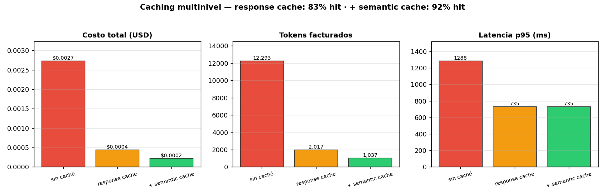

04 — Caching multinivel¶
El caché no cambia la lógica; cambia cuánto la pagás¶
El RAG de §2-§3 ya responde bien. El problema en producción es que paga la API en cada request, y el tráfico real tiene una propiedad que se puede explotar: se repite. En un RAG fiscal chileno, "¿cuál es la tasa de IVA?" no la pregunta un usuario: la preguntan cientos, muchas veces, con palabras parecidas. Cachear es convertir esa repetición en ahorro sin tocar una línea de la lógica de retrieval o generación.
Analogía: el certificado pre-emitido¶
Cuando el Registro Civil o el SII recibe miles de solicitudes idénticas del mismo certificado, no vuelve a calcularlo desde la base cada vez: lo pre-emite y sirve la copia. El costo de generación se amortiza sobre toda la demanda repetida. El caché es exactamente eso: la primera solicitud paga el cómputo; las siguientes idénticas (o equivalentes) pagan casi nada. La disciplina está en saber cuándo dos solicitudes son "la misma" y cuándo la copia ya no sirve (el dato cambió).
Tres niveles que cubren casi todo¶
graph TD
Q[Query del usuario] --> SC{"3. Semantic cache<br/>¿coseno ≥ umbral?"}
SC -->|hit: paráfrasis| HIT3["respuesta cacheada<br/>(sin LLM ni embedding del corpus)"]
SC -->|miss| RET["Retrieval<br/>(usa 1. embedding cache)"]
RET --> RC{"2. Response cache<br/>¿hash exacto?"}
RC -->|hit: repetición exacta| HIT2["respuesta cacheada<br/>(sin LLM)"]
RC -->|miss| LLM["LLM (se paga la API)"]
LLM --> STORE["guardar en 2 y 3"]
style SC fill:#bdf,stroke:#333,color:#1a1a1a
style RC fill:#bdf,stroke:#333,color:#1a1a1a
style HIT3 fill:#2ecc71,stroke:#333,color:#1a1a1a
style HIT2 fill:#2ecc71,stroke:#333,color:#1a1a1a
style LLM fill:#e74c3c,stroke:#333,color:#1a1a1a| Nivel | Clave | Qué atrapa | Dónde vive |
|---|---|---|---|
| 1. Embedding cache | hash(texto) → vector | re-embeddings del mismo texto | ya en OpenAIEmbedder (02-retrieval) |
| 2. Response cache | hash(prompt+modelo+temp) → respuesta | repeticiones exactas | ResponseCache (in-process / Redis) |
| 3. Semantic cache | coseno(query) ≥ umbral → respuesta | paráfrasis de la misma intención | SemanticCache (scan / pgvector) |
El nivel 1 ya lo construimos y pagamos su beneficio en 02-retrieval. Esta
sección agrega los niveles 2 y 3, en prod_lib.py, y
los mide en code/04-caching.py.
La primitiva: LRU con TTL desde cero¶
Los tres niveles se apoyan en un caché con dos políticas de desalojo:
- LRU (Least Recently Used): cuando se llena, sale lo menos usado
recientemente. Un
OrderedDictlo da casi gratis:move_to_endmarca "recién usado",popitem(last=False)saca el más viejo. - TTL (Time To Live): cada entrada expira tras N segundos. Es la defensa contra servir datos rancios (el corpus cambió, la respuesta de ayer ya no vale).
El desalojo por TTL es perezoso: no hay un hilo barriendo; una entrada
vencida se descarta cuando alguien la pide y se la encuentra expirada. Para
el tamaño de estos cachés, eso sobra; un barrido activo es complejidad que no
paga. Es thread-safe con un Lock —el caché es estado mutable compartido
entre requests, justo lo que §2 mandaba sacar de self y poner en un store
con sincronización.
Nivel 2: response cache (repeticiones exactas)¶
ResponseCache envuelve un LLMClient y es un LLMClient (implementa el
mismo Protocol de §2). Eso lo vuelve componible: ResponseCache(OpenAILLMClient())
entra donde el handler espera un cliente, sin que el handler se entere.
La clave es hash(model, temperature, max_tokens, prompt). Si dos requests
producen el mismo prompt exacto, el segundo no paga la API. Sobre la carga
sintética del demo (60 requests, 10 textos únicos, distribución sesgada hacia
las queries calientes):
| config | hit% | costo USD | tokens | p50 | p95 |
|---|---|---|---|---|---|
| sin caché | 0% | 0.00274 | 12.293 | 762 | 1288 |
| response cache | 83% | 0.00044 | 2.017 | 0 | 735 |
84% menos costo y tokens. El hit rate (83%) es directamente la fracción de tráfico repetido: en cuanto las queries calientes se repiten, se sirven gratis.
⚠️ Cuidado con
temperature > 0. Cachear sirve una muestra para todos los requests idénticos. Contemp=0(determinista) es correcto y deseable. Contemp>0es una decisión de producto: ganás consistencia (todos ven la misma respuesta) a costa de diversidad. La clave incluye la temperatura justamente para no mezclar regímenes.
Nivel 3: semantic cache (paráfrasis)¶
El response cache no ve que "¿qué IVA pagan los servicios digitales extranjeros?" y "¿cuál es la tasa de IVA para servicios digitales de proveedores extranjeros?" son la misma pregunta. El semantic cache sí: embebe la query y, si su coseno con una query previa supera un umbral, devuelve la respuesta cacheada.
Agregándolo sobre el nivel 2:
| config | hit% | costo USD | tokens |
|---|---|---|---|
| response cache | 83% | 0.00044 | 2.017 |
| + semantic cache | 92% | 0.00023 | 1.037 |
El semantic cache sube el ahorro de 84% a 92%, atrapando las paráfrasis que el exacto dejaba pasar.

La calibración del umbral: el número de manual está mal¶
Aquí hay una trampa que solo aparece con embeddings reales. El demo
offline usa embeddings idealizados (paráfrasis a coseno ~0.99). La validación
--live, con text-embedding-3, cuenta otra historia:
tipo | sim | hit | query
-----------------+-------+-----+--------------------------------
paráfrasis | 0.756 | sí | ¿Qué IVA pagan los servicios digitales ext
paráfrasis | 0.743 | sí | Tasa de IVA aplicable a plataformas digita
otra intención | 0.305 | no | ¿Cuál es la multa máxima por Ley de Lobby
no relacionada | 0.040 | no | ¿Cuál es la capital de Australia?
Las paráfrasis genuinas caen en ~0.75, no en 0.9. Si copiás el "umbral 0.9 que recomienda el blog post", tu semantic cache no cachea nada. Lo que importa no es el valor absoluto sino la separación: paráfrasis ~0.75 vs otra-intención ~0.30 es un margen amplio y seguro. El umbral se calibra contra esos números, con un golden (01-evals §4), no a ojo:
- umbral muy bajo → sirve la respuesta de una query que no es equivalente (un falso positivo en dominio fiscal puede ser una respuesta legalmente incorrecta).
- umbral muy alto → pierde paráfrasis legítimas; el caché no rinde.
El riesgo del semantic cache es asimétrico: un falso positivo sirve información equivocada con apariencia de correcta. Por eso, en alto-stake (01-evals §12), conviene umbral conservador + auditar una muestra de los hits.
El insight de la cola: el caché abarata, no acelera el peor caso¶
Mirá las p95 del benchmark: sin caché 1288ms, con response cache 735ms... y con semantic cache también 735ms. El caché baja la latencia media brutalmente (los hits son ~0ms), pero la cola p95 la fijan los misses, que siguen pagando el LLM completo. Por más caché que pongas, el primer usuario que hace una query nueva paga la latencia entera.
Implicación para tus SLOs (01-evals §8): reportá p50 y p95 por separado. El caché es una palanca espectacular sobre el p50 y el costo, y casi nula sobre el p95. Si tu problema es el peor caso, el caché no es la herramienta; lo son los timeouts y el fallback de §6.
Trade-offs e invalidación¶
| Eje | Más caché (TTL largo, umbral bajo) | Menos caché |
|---|---|---|
| Costo / latencia media | ↓↓ mejor | peor |
| Riesgo de servir rancio | ↑ peor | ↓ mejor |
| Riesgo de respuesta equivocada (semantic) | ↑ peor | ↓ mejor |
| Memoria / almacenamiento | ↑ | ↓ |
La invalidación es la mitad difícil del caché. Dos disciplinas:
- TTL acota la rancidez por tiempo: para un corpus que se actualiza a diario (Diario Oficial), un TTL de horas evita servir la norma vieja.
- Versión en la clave: la clave del response cache debería incluir el
prompt_ref(§3) y una versión del corpus. Así, cambiar derag-fiscal@v1a@v2, o reindexar el corpus, invalida automáticamente lo viejo: las claves nuevas no colisionan con las viejas, que mueren por LRU.
Cuándo NO cachear¶
| Caso | Por qué |
|---|---|
| Query con datos del usuario ("¿cuánto debo yo?") | La respuesta es personal; cachearla la filtra a otro usuario |
| Output con timestamp / "a la fecha de hoy" | Rancio al día siguiente; o no cachear o TTL ≤ 1 día |
| Corpus que muta dentro del TTL | Servís la norma derogada; baja el TTL o invalidá por versión |
| Tráfico sin repetición (queries todas únicas) | Hit rate ~0; el caché solo agrega memoria y complejidad |
| Respuestas que deben auditarse individualmente | Cada una debe registrarse como generación nueva (§11, §12) |
La regla: cachear es seguro cuando la respuesta es función pura del input público. En cuanto entra el usuario, el tiempo, o un corpus volátil, el caché necesita una clave que lo capture o no debe existir.
Estado del arte (2026)¶
| Aspecto | Estado | Detalle |
|---|---|---|
| Response cache exacto | ✅ Estándar | El 80% del valor; trivial de implementar y razonar |
| Prompt caching del proveedor (Anthropic/OpenAI) | 🟢 Complementario | Cachea el prefijo del prompt server-side; ataca costo de input, no evita la llamada. Se combina con el response cache, no lo reemplaza |
| Semantic cache | 🟡 Útil con cuidado | Gran ahorro en dominios con alta paráfrasis; riesgo real de falsos positivos. Calibrar con golden |
| Umbral "0.9 por defecto" | 🔴 Anti-patrón | Las paráfrasis reales caen ~0.7-0.8; el 0.9 cachea casi nada. Medir siempre |
| Cache en Redis vs in-process | 🟢 Según escala | In-process basta para una réplica; Redis cuando hay multi-worker (§7) |
| Invalidación por versión (prompt/corpus en la clave) | 🟢 Best practice | Resuelve el problema más difícil del caché casi gratis |
Lo que viene en las próximas secciones¶
- §5 observabilidad: el
from_cacheque ya viaja en la metadata delRAGAnswerse vuelve una métrica de primer orden: hit rate por nivel, ahorro acumulado, latencia p50/p95 separando hits de misses. - §6 reliability: el caché es también un mecanismo de fallback — cuando el LLM está caído, servir la respuesta cacheada (aunque algo rancia) es mejor que un 503. Lo vamos a usar ahí.
- §7 despliegue: el salto de caché in-process a Redis cuando hay más de una réplica; la clave y el TTL no cambian, sí el backend.
- §10 costo: el caché es la palanca de costo más grande; ahí lo metemos en el presupuesto por feature con números de tu corpus.
Conexiones¶
- §2 arquitectura:
ResponseCacheimplementa el ProtocolLLMClient; se apila como una capa más sobre el adaptador del proveedor, igual que harán retry y circuit breaker en §6. - §3 prompts: el
prompt_refversionado entra en la clave del response cache; subir de@v1a@v2invalida lo viejo sin trabajo manual. - 01-evals §4 (golden): el umbral del semantic cache se calibra contra un golden de pares (query, paráfrasis equivalentes), no a ojo.
- 01-evals §8 (estadística): reportá p50 y p95 por separado; el caché mueve el p50, no el p95, y confundirlos lleva a SLOs mal puestos.
- 02-retrieval (embedding cache): el nivel 1 ya estaba; esta sección completa la pirámide hacia arriba (response y semantic).